Yuasa, Wakayama: things to do, food and stays
Yuasa · Wakayama
Yuasa
Highlighted on the Wakayama map.
Stay
紀州湯浅古民家町家宿泊 千山庵 SenzanAn かじやまち301
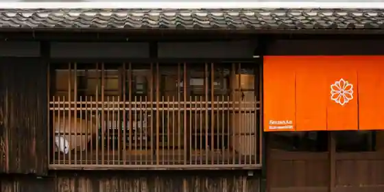
Kishu Yuasa Ko Minka Choka Shukuhaku Senzan Iori SenzanAn Kajiyamachi 301
Inn in Yuasa with a renovated traditional house.
紀州湯浅古民家町家宿泊 千山庵 SenzanAn きたまち102
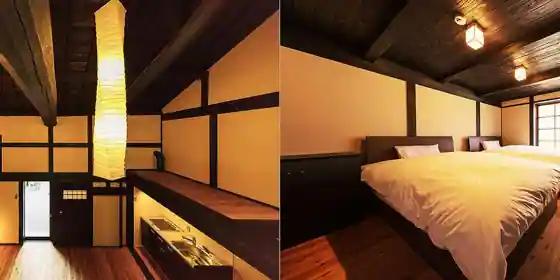
Kishu Yuasa Ko Minka Choka Shukuhaku Senzan Iori SenzanAn Kitamachi 102
Inn in Yuasa with a renovated traditional house.
紀州湯浅古民家町家宿泊 千山庵 SenzanAn きたまち101
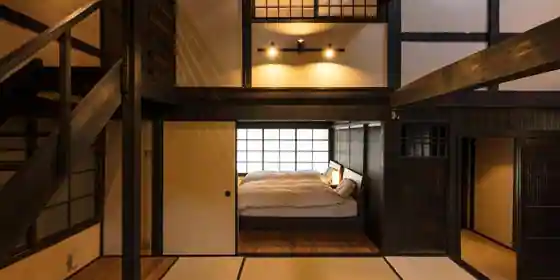
Kishu Yuasa Ko Minka Choka Shukuhaku Senzan Iori SenzanAn Kitamachi 101
Inn in Yuasa with a renovated traditional house.
割烹旅館 美よし荘
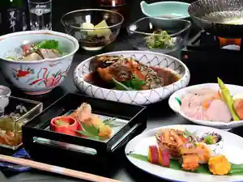
Kappo Ryokan Bi Yoshi So
Ryokan inn in Bessho, Yuasa with kaiseki dinners and Wi-Fi.
Tabist 湯浅温泉 湯浅城
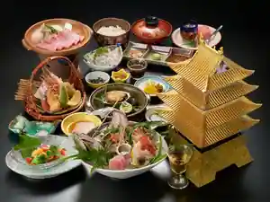
Tabist Yuasa Onsen Yuasa Shiro
Inn at Yuasa Onsen in Aoki, Yuasa.
民宿タムラ
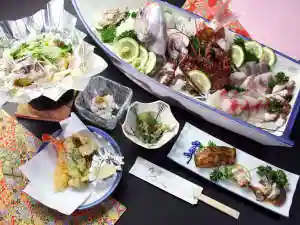
Minshuku Tamura
パートナーズハウスゆあさ
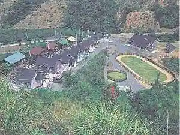
Patonazu House Yuasa
Inn in Yamada, Yuasa with pet-friendly rooms.
Dining
かどや食堂
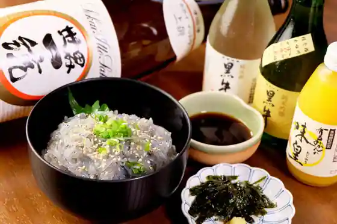
Kadoya Shokudo
湯浅米醤
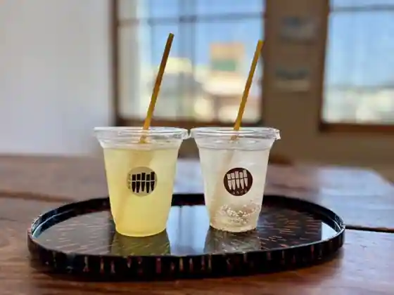
Yuasa Kome Sho
海ひこ
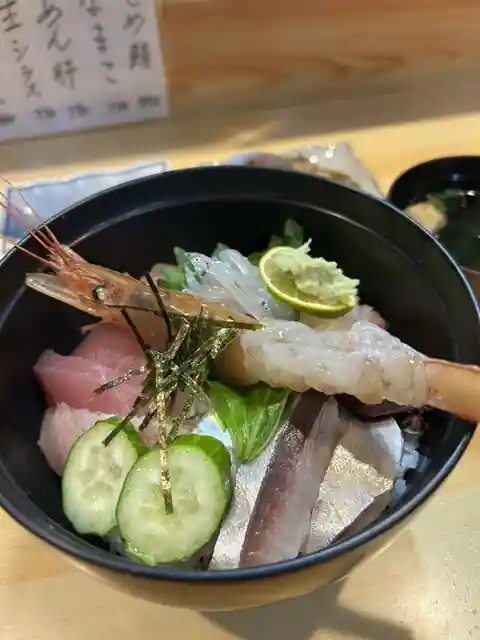
Umi Hiko
蔵カフェ
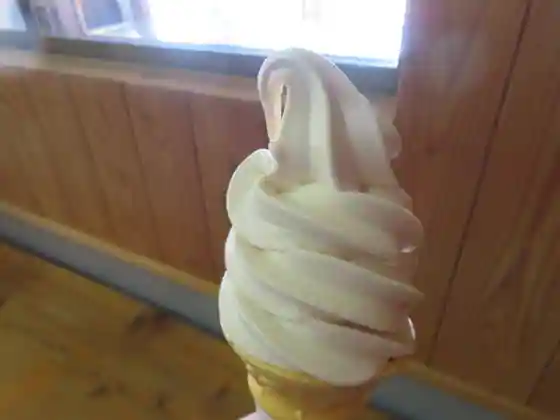
Kura Cafe
日本料理 横楠
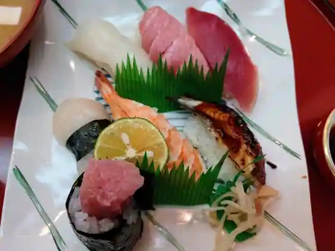
Nihonryori Yoko Kusunoki
湯浅醤油
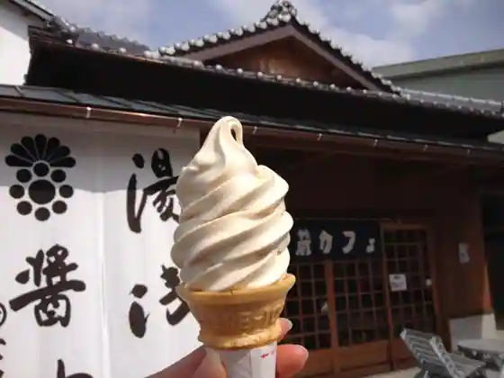
Yuasa Shoyu
栖原温泉
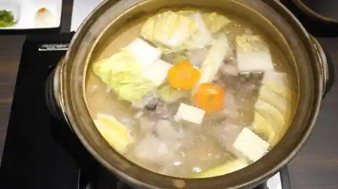
Suhara Onsen
M.CITRUS FRUIT PARLOR
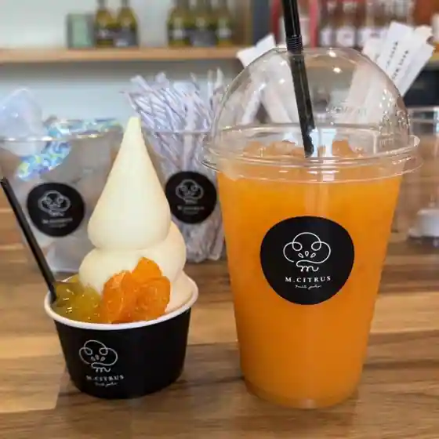
M. CITRUS FRUIT PARLOR
湯浅城
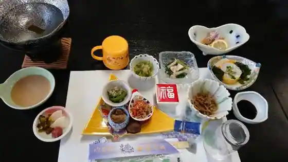
Yuasa Shiro
大黒屋
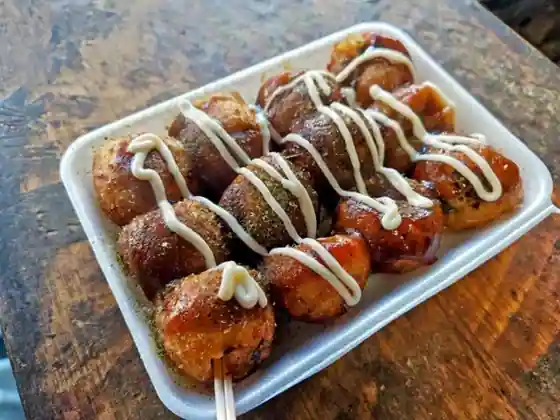
Daikokuya
古由青果
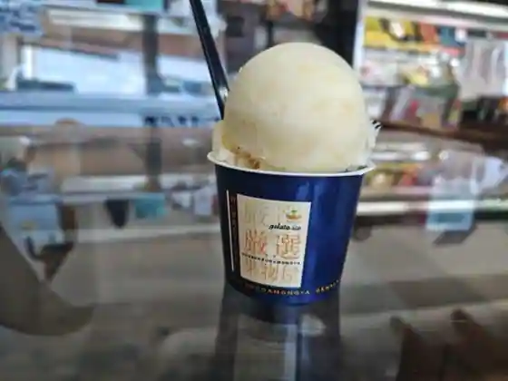
Ko Yusei Ka
北町茶屋 いっぷく
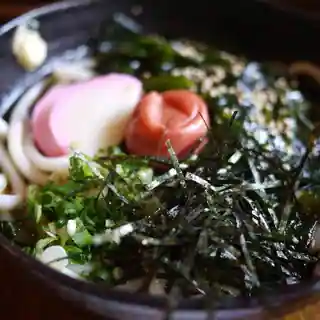
Kitamachi Chaya Ippuku
がけっぷち
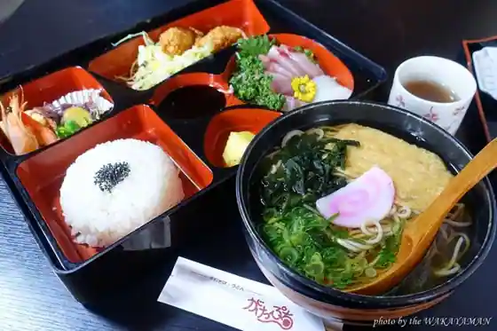
Gakeppuchi
スパイスカレー チャッピー
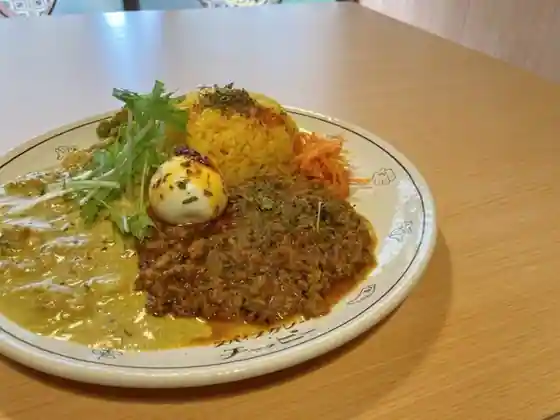
Supaisukare Chappi
レストラン花莚
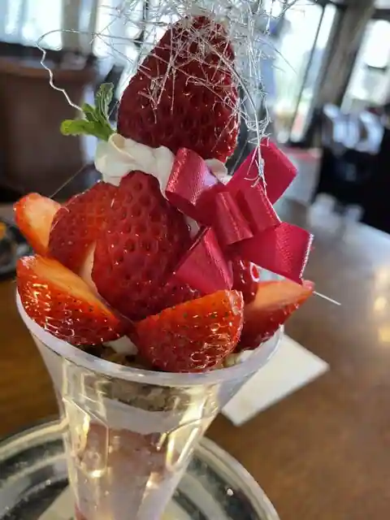
Restaurant Hana Mushiro
はたよ食堂
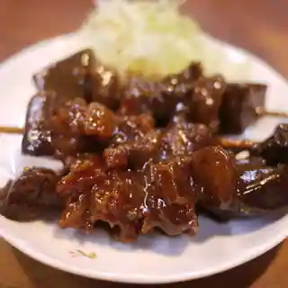
Hatayo Shokudo
ドンキー
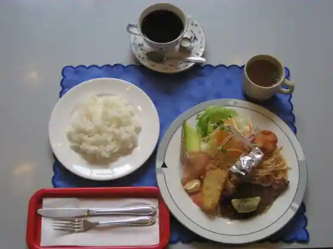
Donki
タムラ
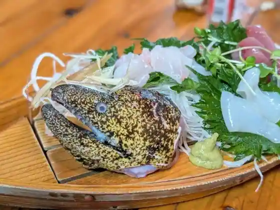
Tamura
パン工房 カワ 本店
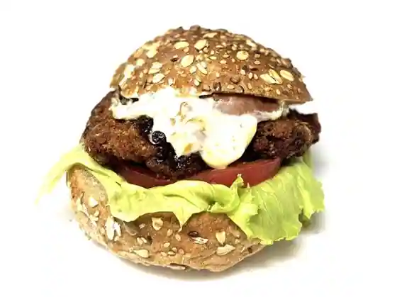
Bakery Kobo Kawa Hon
BORMMEN
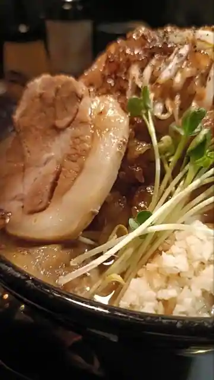
BORMMEN
一喜
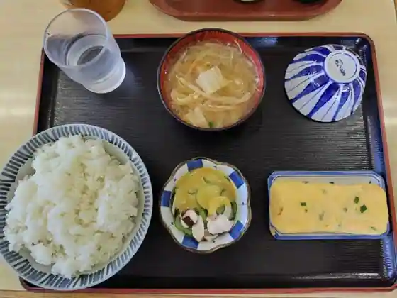
Kazuki
シンフォニー
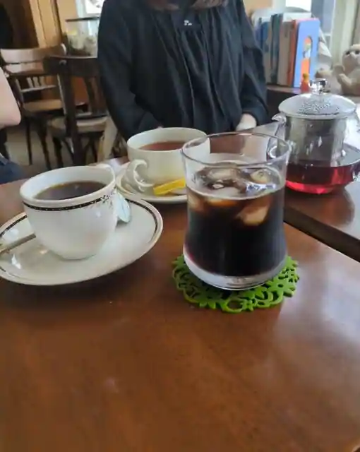
Shinfoni
Sights
Juyo Dentoteki Kenzobutsu Gun Hozon Chiku
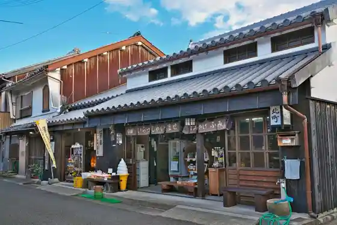
Shiro Ryo Kengaku
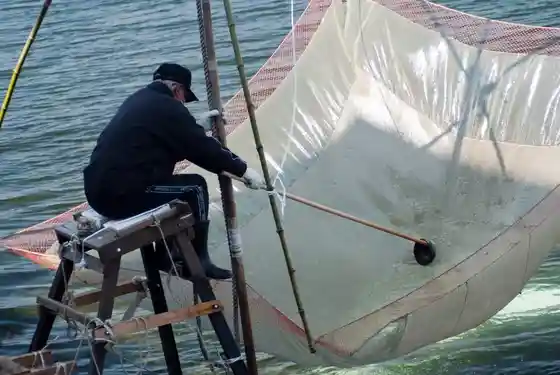
Suhara Coast